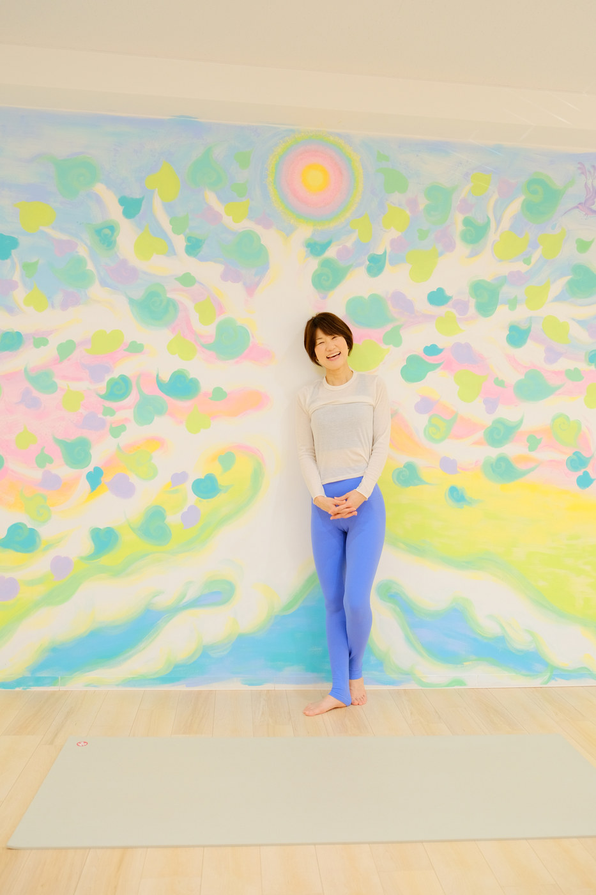

Instructors
Studio Likoには、それぞれの経験と視点を持った講師が集まっています。
あなたに合うペースで、丁寧にご案内します。

SATOKO IWAMOTO · FOUNDER
Founder
Satoko Iwamoto
代表 / ヨガ・ベビーサイン講師
第2子妊娠中にヨガに出会い、その心地よさと開放感からヨガの世界に惹かれていきました。産後のママたちが子連れでヨガできる場所が少ないことに気づき、友人からの「家で教えてほしい」という声をきっかけに、教室の活動を始めました。
娘とのコミュニケーションをより深めたいと考えた時に出会ったのが、ベビーサイン育児です。育児がとても楽になった経験から、ベビーサイン講師の道へ進みました。NPO法人日本ベビーサイン協会認定・福岡唯一のマスター講師として、これまでにトータル6,000組以上・1万人を超えるご家族にお伝えしています。
「孤独になりがちなママたちがいるのではないか、少しでも産後のお役に立ちたい」── そんな想いから、Studio Likoを立ち上げました。喜びと共にヨガとベビーサインをお伝えできるよう、日々学びを続けています。
Instructors
それぞれの強みと視点を持った講師が、あなたのペースに合わせてご案内します。
KAZUEさん
写真準備中
KAZUE
ヨガ講師
ヨガとの出会いはマタニティヨガ。時間がある、行くと楽しい。ただそれだけのきっかけでした。産後はほぼマンツー育児。ちょっとリフレッシュがてらヨガ体験に行き、没頭する時間と終わった後のスッキリ感、これを求めてヨガ再開！
そもそも短期集中型の私が続いている事。それはヨガという大枠の中で、骨格、筋、呼吸など学びを深め、1人ブーム到来してはクラスに繁栄させて一緒にヨガを楽しんでます。
ご縁いただきクラスできる事に感謝しながら、皆様と時間を共有できる事を楽しみにしてます。
宜しくお願い致します。
MANAさん
写真準備中
MANA
ヨガ講師
ヨガを通して日頃頑張っている皆様にちょっと立ち止まって ふーっとリラックスできる空間を作れたらと思っています！
いくつになっても”楽しむ”ことができるように身体と心をととのえていくお手伝いになれば嬉しいです。
HIROMIさん
写真準備中
HIROMI
ヨガ講師
10数年前に、小さなきっかけではじめたヨガでしたが、これまでわたし自身がたくさん救われ、生活の中に常にヨガがあります。学びを深める中でたくさんのご縁をいただき、ヨガのお仕事に携わらせて頂いています。
ヨガの時間を通して呼吸が深まると共に、いまの心身の様子や小さな変化に気づき、徐々に心身が整っていく感覚を大切に味わうこと。その気づきや感覚を通して、皆さまの日常生活がより穏やかで充実したものになるといいな、という思いを大切に活動しています。
どうぞよろしくお願い致します。
AYUMIさん
写真準備中
AYUMI
ヨガ・ピラティス講師
産後太り解消のためスポーツジムに通いだしたことがキッカケで、体を動かすことの楽しさに目覚め、ヨガやピラティスが自分にはしっくりくるなぁと思い、50歳を目前にしながらも思い切って資格取得にチャレンジ！
ヨガもピラティスも奥深く、学ぶほどにどちらも『人生を楽しく、生きやすく』するための要素が沢山あるなと感じています。
カラダの不調は心の不調に、心の不調はカラダの不調に通じていると思います。
心も身体も健康的にいられるよう皆様のお役に立てたらと思っています。
SHINOBUさん
写真準備中
SHINOBU
ヨガ講師
息子2人と娘1人の母です。
ヨガは肩こりに悩んでいた時に友人から誘われて始めました。身体がほぐれていくと辛い肩こりも解消して、体力もつきました。また、呼吸とともに動くヨガの心地よさに、心も軽くなったような感じです。何かと忙しい日常の中で、皆様の心と身体を軽くしなやかにするお手伝いができたら、と思います。ヨガが初めての方からより深めたい方まで、心地よいレッスンを心がけています！
NANAMIさん
写真準備中
NANAMI
ヨガ講師
理学療法士歴8年。正しい体の使い方で心地よい動作へと誘導します。また、インストラクターとして日々頑張る皆様の心と体に癒しを届けたくてヨガを伝えています。一緒に体を動かし心も体をすっきり整えましょう！
RESERVATION
「この先生のクラスを受けたい」「どのクラスか迷っている」
どんなご相談でもお気軽にお声がけください。
福岡市西区愛宕南2丁目12-12（姪浜エリア）